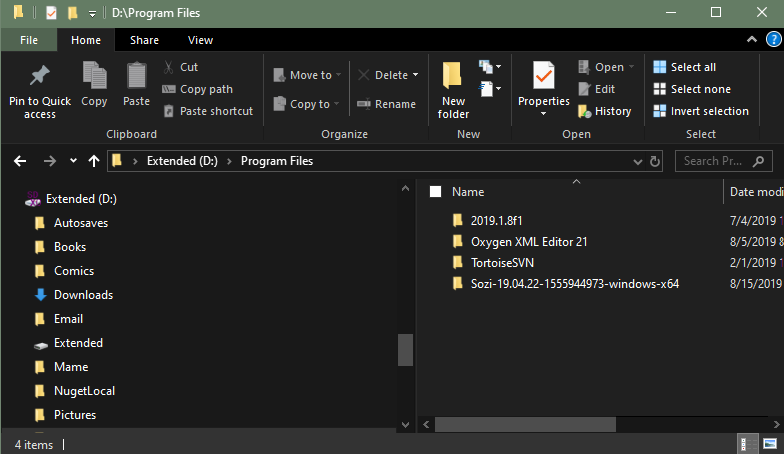

Using Sozi to create Dynamic SVG driven Presentations Inkscape, Presentations
I have been using SVGs illustrations in PowerPoint for years and I have always been interested in creating something more dynamic that stale Slides.
Lets download Sozi https://sozi.baierouge.fr/pages/install.html Check your version of Windows but you will likely need the 64 bit version. Sozi-19.04.22-1555944973-windows-x64.zip Copy the contents of of the Zip File to your Program Files 